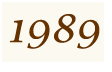
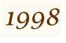
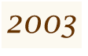

ルイ・ヴィトン 日本進出の背景
ルイ・ヴィトンが初めて日本に進出した1970年代当時は、悪質な並行輸入業者が横行していました。並行輸入業者は一般旅行客を装いパリでルイ・ヴィトンの製品を一度に大量に買い、日本で法外な価格で販売していました。当時の輸入品、高級品ブームによる度を超えた日本での価格設定は、現地価格の２〜２.５倍が相場で、並行輸入の場合は、３倍もの値段がつけられたといいます。
|
1976年，パリのルイ・ヴィトン本店前に連日できる日本人の長い行列の光景に驚いたルイ・ヴィトン経営陣は，「いったい日本はどうなっているのだ？」ということで、米国の会計事務所ピート・マーウィックを通じて，日本の市場調査を依頼しました。この依頼をピート・マーウィックの東京事務所の、後にルイ・ヴィトン・ジャパンの社長となる秦郷次郎氏が担当しました。
|
この報告により、秦氏は本格的なコンサルティングを依頼され、ルイ・ヴィトン社からほとんど資金を出してもらわずに国内で調達する一方，商品はしっかりした管理のもとに販売するという独自のビジネスモデルを提案しました。
|
日本での販売先となる百貨店（小売店）と，パリのルイ・ヴィトン社が直接，商品を取引し、百貨店のパリ支店から，ルイ・ヴィトンの倉庫まで，直接，商品を受け取りに行ってもらうディストリビューション契約。
|
その後、1997年、アーティスティック・ディレクターにマーク・ジェイコブスが就任すると、本格的にプレタポルテに参入。歴史ある老舗ブランドにファッション性が加わり、鞄だけでなく洋服、靴、時計などルイ・ヴィトン製品をすべて扱う店舗面積が広いグローバルストア展開を開始。
ウェア等の新しい展開スペースを確保するために直営店の出店が加速していきました。
|
|
ルイ・ヴィトン 店舗出店推移
| ルイ・ヴィトン日本支社設立。正式店舗が東京、大阪に6店舗出店 | |
| 3月 日本橋高島屋店、高島屋サンローゼ赤坂店、西武渋谷店、西武ピサ大阪ロイヤルホテル店、アンロワイヤル阪急17番街店が出店。 | |
| 9月 大阪高島屋店が出店。 | |
| ルイ・ヴィトン ジャパン設立。日本国内初の直営店・銀座並木通り店が出店 | |
| 2番目の直営店となる神戸元町店が出店 | |
| 3番目の直営店となるヒルトンプラザ店が大阪梅田ヒルトンホテルに出店 | |
| 4番目の直営店となるサンローゼ赤坂店がホテル・ニューオータニに出店 | |
|  | 5番目の直営店となる青山店が出店 |
|  | 世界で3番目（日本初）のグローバルストアとなる大阪心斎橋店が出店 |
| 世界最大級の旗艦店、国内44店舗目となる表参道店が出店 | |
|  | 高知に初の独立路面店となる高知店が出店 |
| 六本木ヒルズ店が出店 | |
| 銀座並木通り店がリニューアルオープン | |
| 伊勢丹に初の出店となる伊勢丹浦和店が出店 | |
| 名古屋駅前に国内54店舗目、グローバルストアとして11店舗目となるミッドランドスクエア店が出店 | |
成長戦略基盤の店舗が建設される一方、既存店の整理も行われました。
|